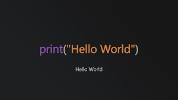

Curiosità
"Hello World" è l'esempio più diffuso e utilizzato in fase di apprendimento e/o test di un linguaggio di programmazione, di applicazioni o di pagine web. Tutti i programmatori conoscono queste parole e ne hanno fatto largo uso, ma il suo primo utilizzo pare sia da attribuire a Brian Kernighan che nel 1978 utilizzò questo esempio nel suo libro "The C programming language".
Quasi nessun professore e/o istruttore fa riferimento a questa storiella, eppure ad oggi quasi la totalità degli informatici si trova a utilizzare queste parole quotidianamente.